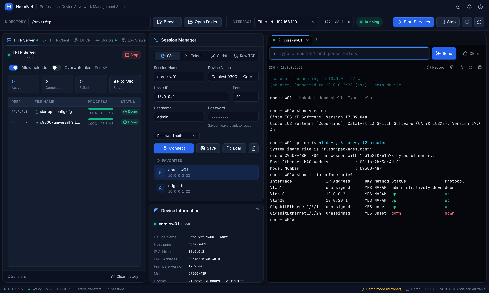

TFTP server and client, DHCP server, Syslog server, and an SSH / Telnet / Serial terminal, built for network engineers and field technicians.
Download for Windows
Stop juggling Tftpd64, PuTTY, a serial monitor and a syslog viewer.
Firmware upgrades and config backups with live progress, concurrent transfers and a safe root folder.
Give devices an address on a bench network, with reservations and boot options for PXE.
UDP and TCP, Cisco / RFC 3164 / 5424 parsing, colour-coded severities, search and CSV export.
Tabbed terminal with a command bar, history, autocomplete and session recording.
Favorites and recents. Passwords are kept in the Windows credential store, never in plain text.
Native app, dark and light themes, resizable panels, small download.
Latest version for every platform.
Takes under a minute.